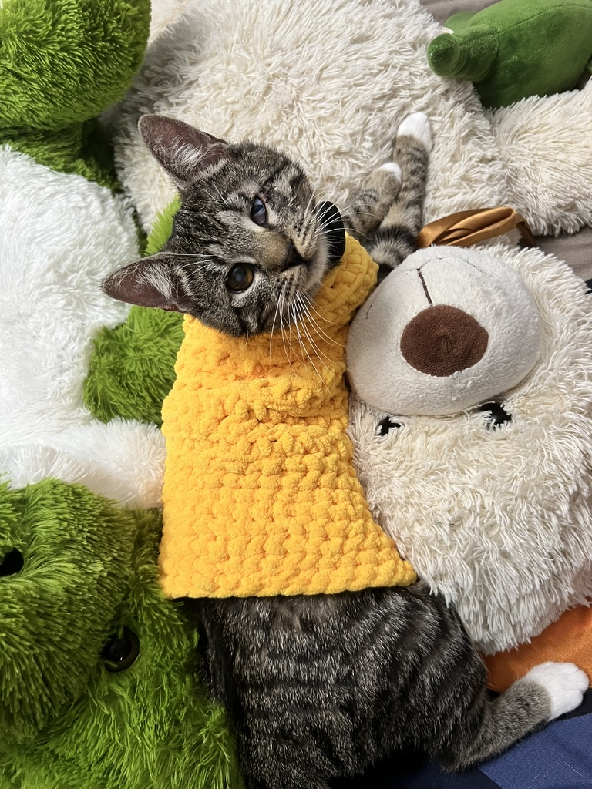

În spatele Ade’s Soft Stitches sunt eu, Adelinne, o iubitoare de lucruri făcute manual și de idei care prind viață.
Totul a început cu pisica mea, Didi. După o operație, am vrut să îi fac ceva care să îi țină de cald și să îi fie cât mai confortabil, așa că i-am croșetat o hăinuță.
A fost primul lucru pe care l-am făcut cu adevărat din suflet și, fără să îmi dau seama, și începutul acestui mic atelier. De atunci, am început să creez plușuri și cadouri personalizate, inspirate de animăluțe, personaje și idei care au o poveste în spate.
Fiecare produs este lucrat manual, cu atenție la formă, culori și micile detalii care îl fac special. Îmi place ca fiecare creație să păstreze ceva personal și să fie mai mult decât un simplu obiect: un cadou cald, făcut cu grijă.

Pentru produse personalizate, prețul final depinde de complexitate, dimensiune și materiale. Trimite o cerere și îți răspund cu o estimare înainte să încep lucrul.
Pentru modele noi, proces de lucru și idei de cadouri, mă găsești pe Instagram și TikTok.